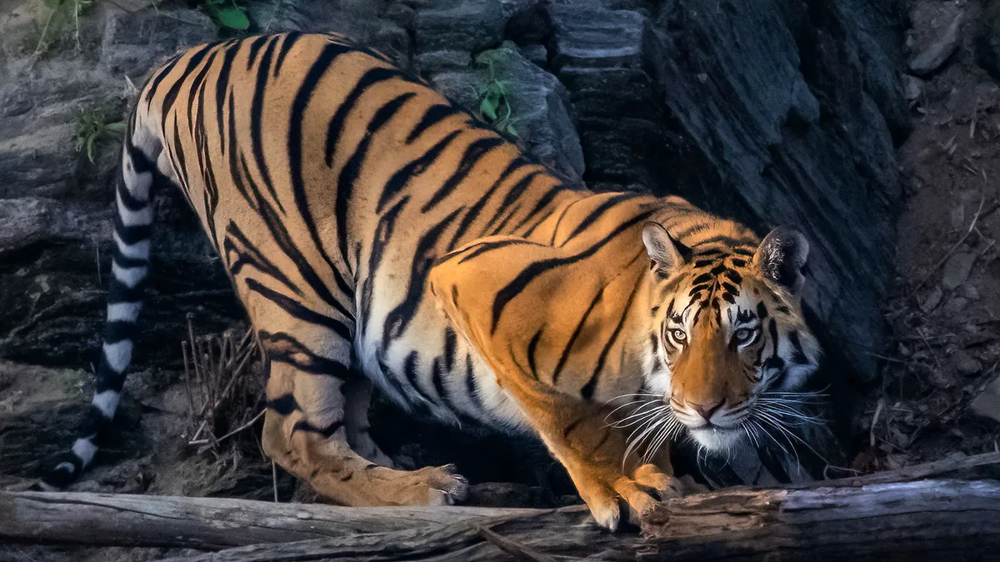
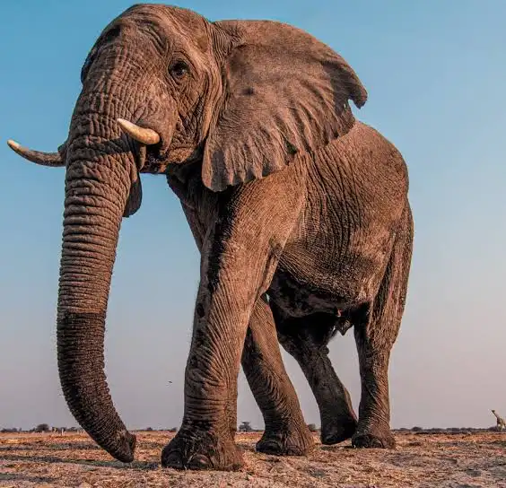
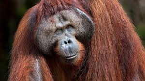
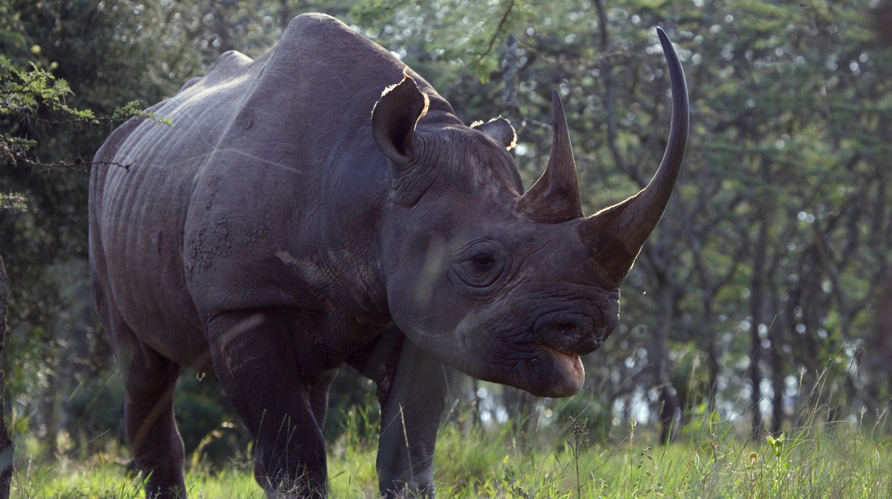
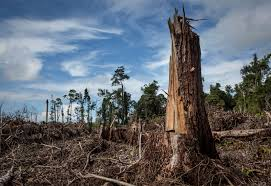
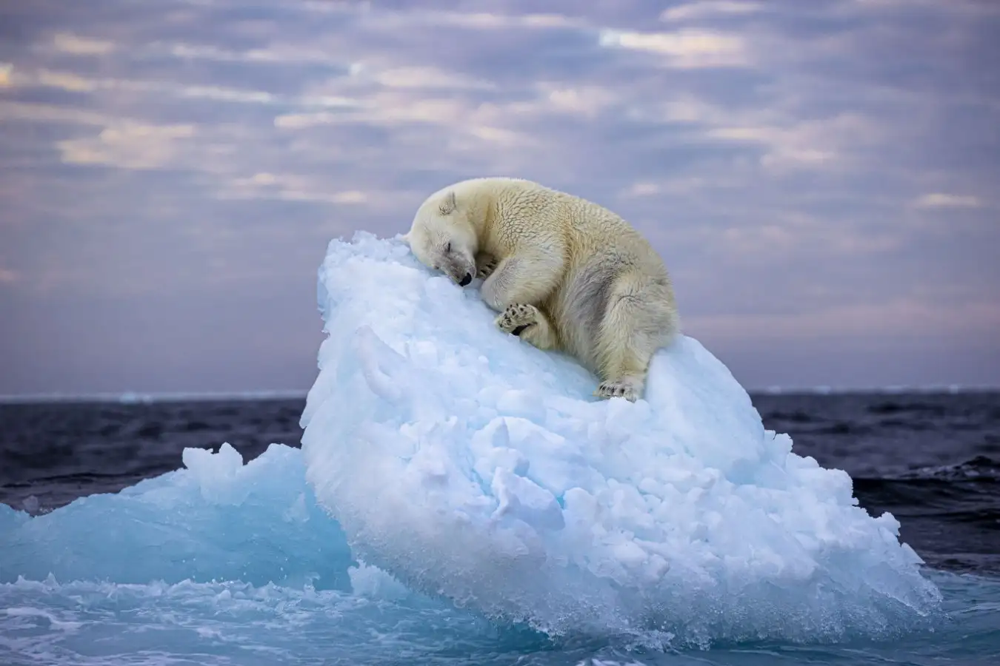
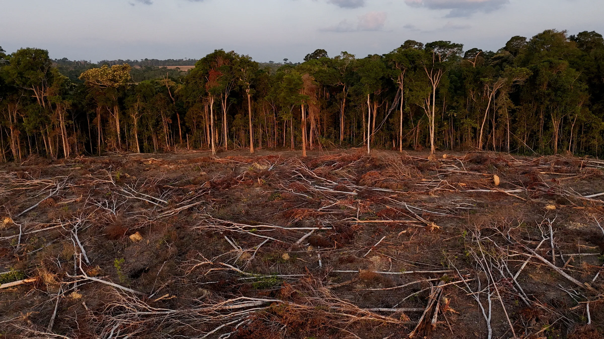

Mountain Gorilla
Critically Endangered → Endangered
Population: 680 → 1,063+
Intensive conservation in Rwanda, Uganda, and DRC brought them back from the brink.
Over 42,100 species are threatened with extinction. Explore the data, meet the animals, and discover how you can help protect our planet's biodiversity.





Real-time data from the IUCN Red List of Threatened Species
Photographs and data from the wild. Each image tells a story of survival.
Conservation International has identified 36 biodiversity hotspots worldwide. These regions contain 44% of the world's plants and 35% of land vertebrates, yet only 2.3% of the original habitat remains.

Four primary drivers of species extinction
85% of species threatened
Deforestation, agriculture, and urban development destroy 18.7 million acres of forest annually.

1,000+ rhinos killed annually
Illegal wildlife trade generates $23 billion per year, affecting tigers, elephants, pangolins, and more.

1M species at risk
Rising temperatures, ocean acidification, and extreme weather events disrupt ecosystems worldwide.

8M tons plastic/year
90% of seabirds have plastic in their stomachs. Chemical runoff creates 500+ ocean dead zones.

World Wildlife Fund · 5M+ supporters
Protecting forests and oceans since 1971
Science-based solutions
Global authority on species status
Stay informed about the latest developments

Brazil reports lowest deforestation rate in five years due to enhanced enforcement.
Read More →
Successful conservation brings tigers to 3,500, half of global wild population.
Read More →
New technique plants 10,000 corals per day in Great Barrier Reef trial.
Read More →Every action counts. Here's how you can help protect endangered species today.